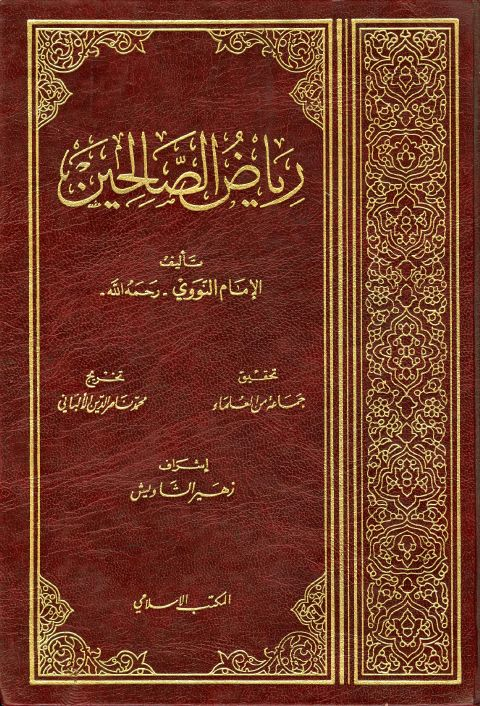
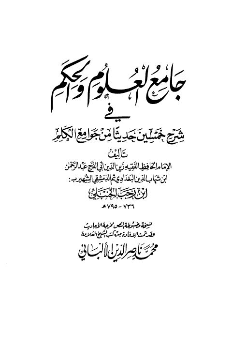
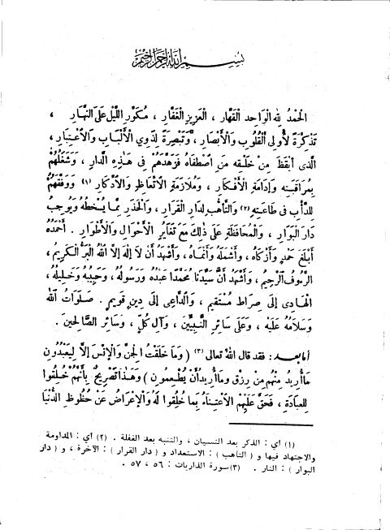

محمد ناصر الدين الألباني
Author
· d. 1420 AH
Resources
 رياض الصالحين- ت. الألباني
رياض الصالحين- ت. الألباني
يحيى بن شرف النووي
رياض الصالحين- ت. الألباني
رياض الصالحين- ت. الألباني
يحيى بن شرف النووي

رياض الصالحين- المكتب الإسلامي رياض الصالحين- المكتب الإسلامي يحيى بن شرف النووي هداية الرواة إلى تخريج أحاديث المصابيح والمشكاة
هداية الرواة إلى تخريج أحاديث المصابيح والمشكاة
أحمد بن علي بن حجر العسقلاني
هداية الرواة إلى تخريج أحاديث المصابيح والمشكاة
هداية الرواة إلى تخريج أحاديث المصابيح والمشكاة
أحمد بن علي بن حجر العسقلاني

جامع العلوم والحكم في خمسين حديثًا من جوامع الكلم- ط. دار الصفوة جامع العلوم والحكم في خمسين حديثًا من جوامع الكلم- ط. دار الصفوة عبد الرحمن البغدادي بن رجب الحنبلي
رياض الصالحين رياض الصالحين يحيى بن شرف النووي